Oficinas e Residências
Encontros presenciais nos quais técnicas e processos criativos são compartilhados. Pigmentos preparados à mão, matéria-prima coletada em território e um convite à autonomia criativa.
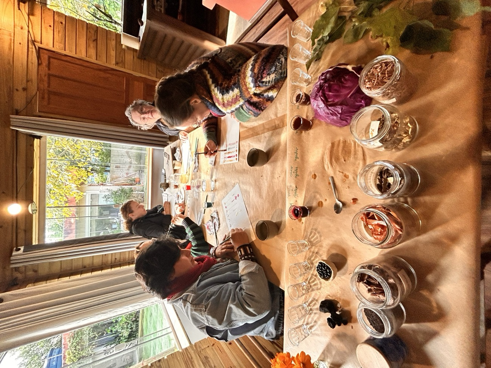
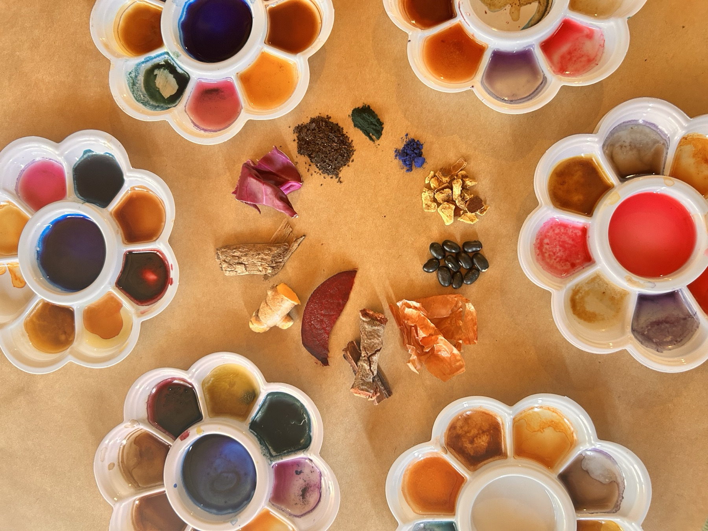
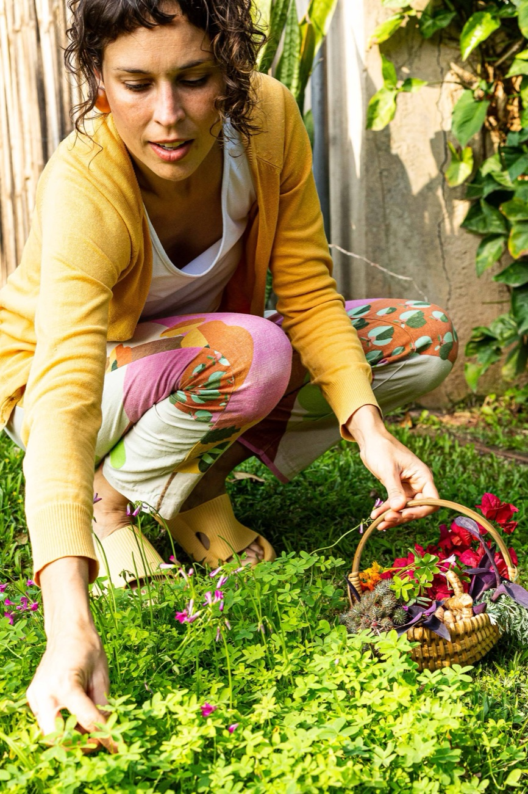
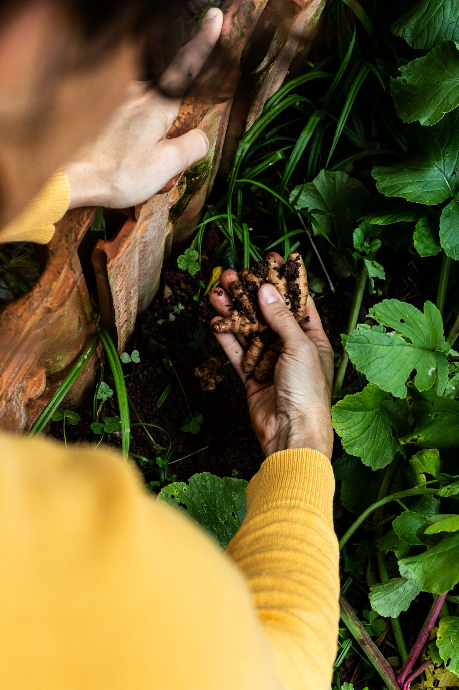
Aquarelas Naturais
A oficina de Aquarela Natural consiste em um encontro presencial rico e inspirador, que possui formatos para o público infantil e para o público adulto.
Através de uma vivência dinâmica e participativa, a artista Eliza Makray oferece uma introdução ao universo dos pigmentos naturais, compartilha sobre sua experiência e seu processo criativo e apresenta passo a passo de como fazer e aplicar uma paleta de cores variadas de aquarelas naturais feitas a partir de elementos naturais acessíveis no nosso dia a dia.
Uma linda oportunidade para instigar a curiosidade, inspirar um olhar criativo e sensível diante da natureza e para quem deseja conhecer recursos artísticos naturais, sustentáveis, seguros para a saúde, acessíveis, que não agridem o meio ambiente e que proporcionam autonomia para o processo criativo. Uma vivência que valoriza saberes tradicionais brasileiros e dialoga com a perspectiva ecológica de perceber e interagir com o ecossistema.
Neste formato de oficina a artista faz uma breve introdução ao universo das Tintas Naturais através de uma mesa lindamente decorada com as matérias-primas naturais que serão utilizadas para o preparo de algumas cores de aquarelas naturais.
Os participantes terão a oportunidade de participar de cada etapa do preparo das tintas e depois de fazer sua própria pintura com as tintas feitas, que poderão ser levadas de lembrança da oficina.
Neste formato de oficina a artista faz uma introdução ao universo das Tintas Naturais através de uma mesa lindamente decorada com as matérias-primas naturais que serão utilizadas para o preparo de algumas cores de aquarelas naturais.
Os participantes terão a oportunidade de conhecer as formas de extração, conservação e fixação das aquarelas naturais e irão participar de cada etapa e particularidade do preparo de uma vasta paleta de cores. Em um último momento os participantes serão convidados a elaborar sua própria pintura com as tintas feitas, que poderão ser levadas de lembrança da oficina.
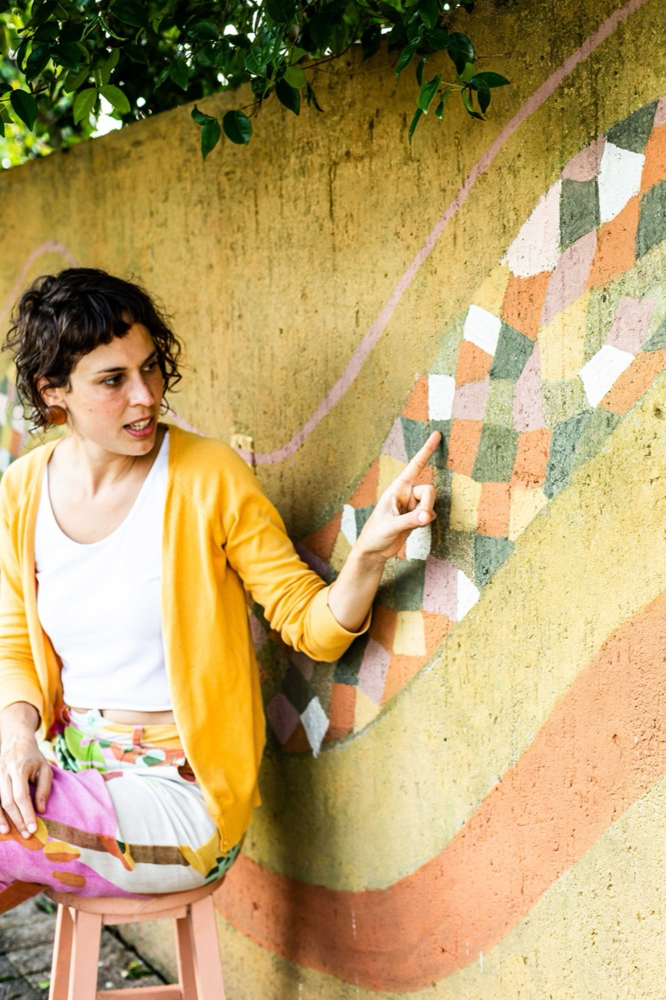
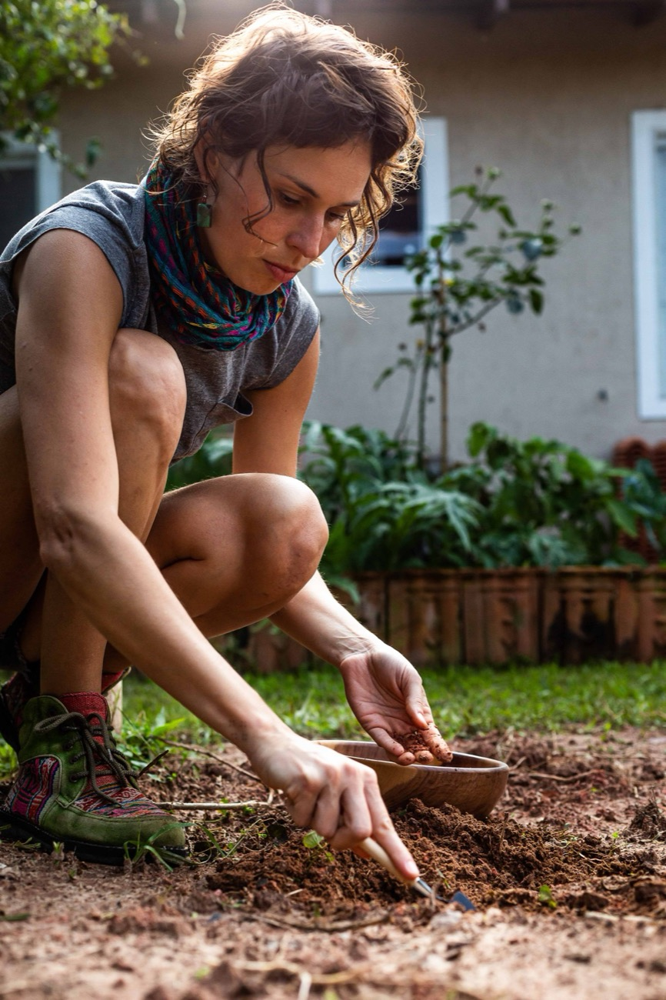
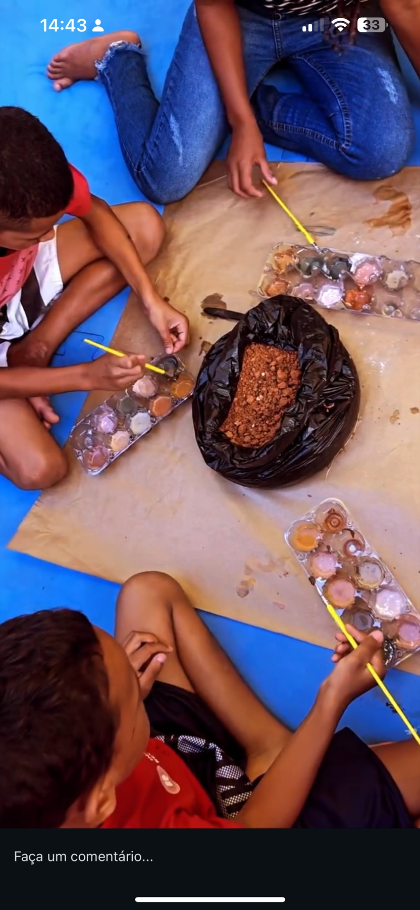
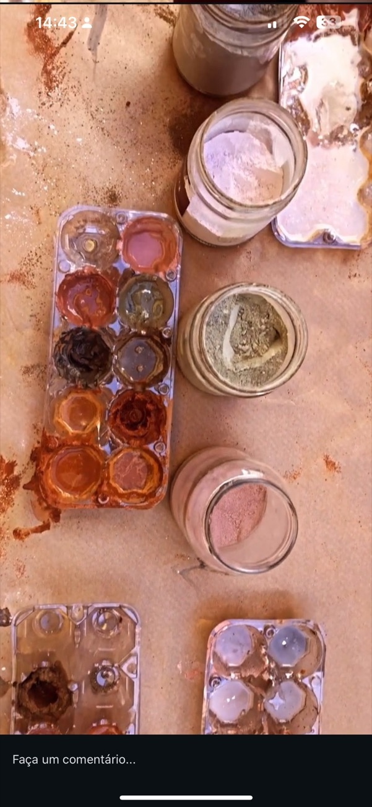
Tintas de Terra
A oficina de Tintas de Terra consiste em um ou mais encontros presenciais, que possui formatos para o público infantil e para o público adulto.
Através de uma vivência dinâmica e participativa, a artista Eliza Makray oferece uma introdução ao universo dos pigmentos minerais, compartilha sobre sua experiência e seu processo criativo e apresenta passo a passo de como fazer e aplicar uma paleta de cores variadas de geotintas feitas a partir de terra coletada na região onde o curso está acontecendo, dentre outras opções.
Uma linda oportunidade para instigar a curiosidade, inspirar um olhar criativo e sensível diante da natureza e para quem deseja conhecer recursos artísticos naturais, sustentáveis, seguros para a saúde, acessíveis, que não agridem o meio ambiente e que proporcionam autonomia para o processo criativo. Uma vivência que valoriza saberes tradicionais brasileiros e dialoga com a perspectiva ecológica de perceber e interagir com o ecossistema.
Receber apresentação da oficina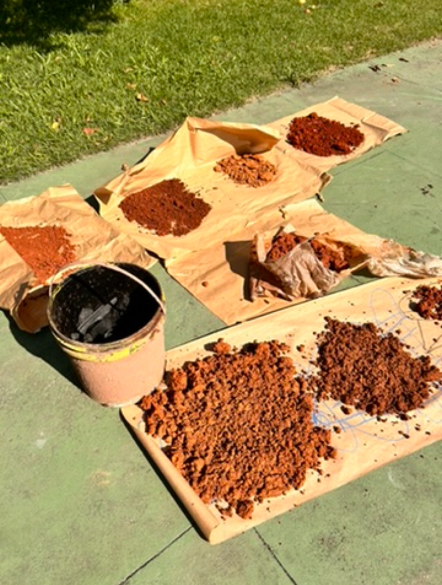
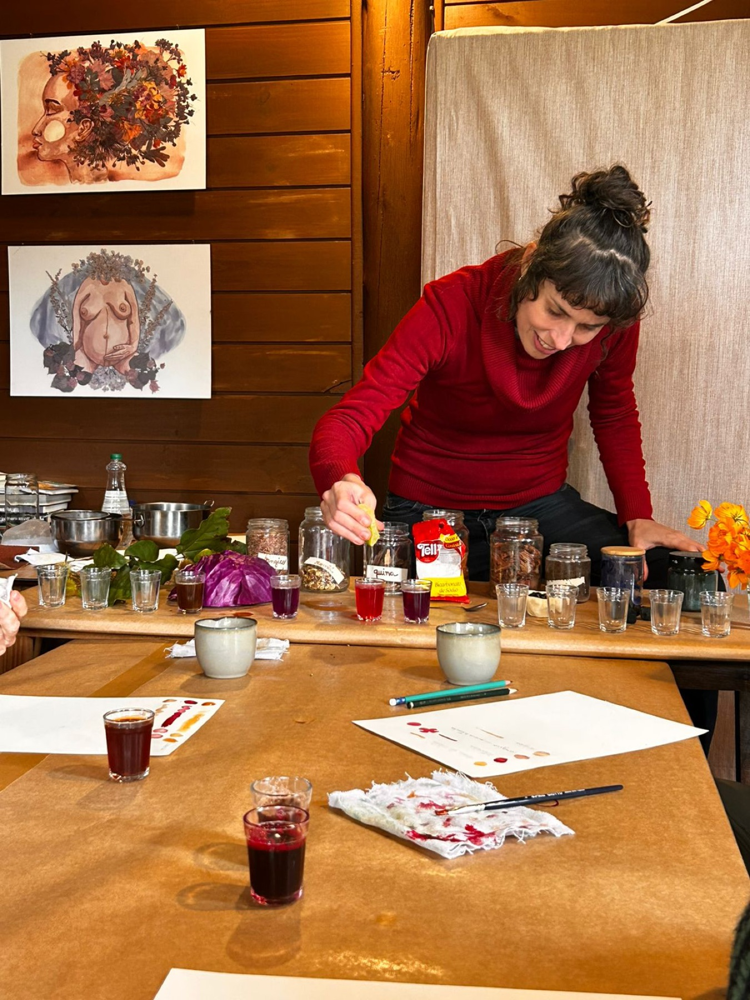
Artista da Natureza
Eliza compartilha seu conhecimento e experiência a respeito da multidisciplinariedade no âmbito artístico — um convite para refletirmos sobre a sociedade de consumo em que vivemos e elaborarmos possibilidades de desenvolver nosso processo criativo de maneira consciente, contrapondo-se à falsa percepção de dependência do mercado e de produtos industrializados para a expressão artística.
A artista convida o público a criar ferramentas artísticas básicas através de processos manuais e artesanais, utilizando recursos naturais do território em questão.
Receber apresentação da oficina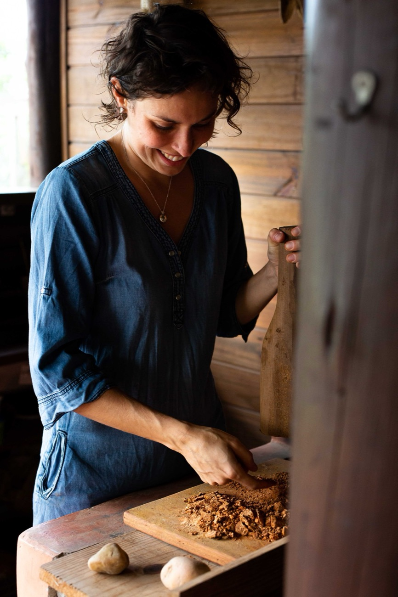
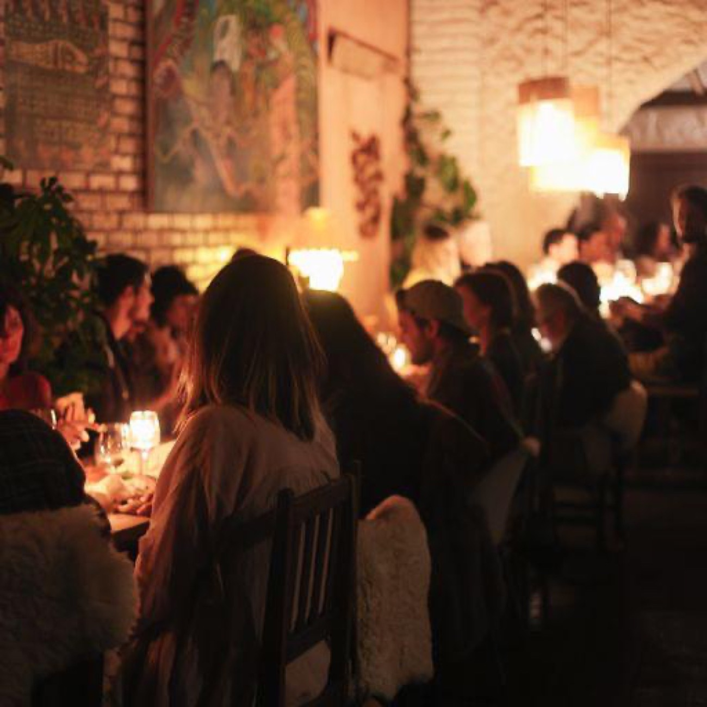
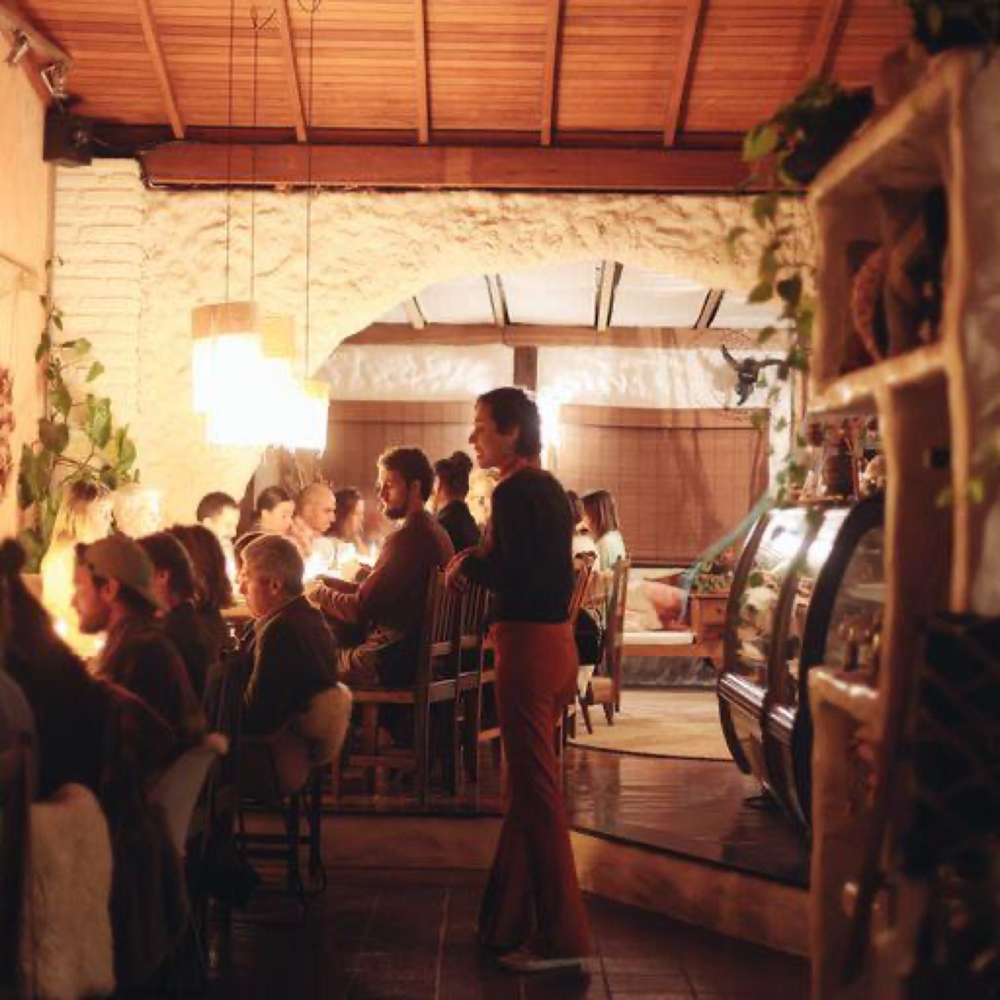
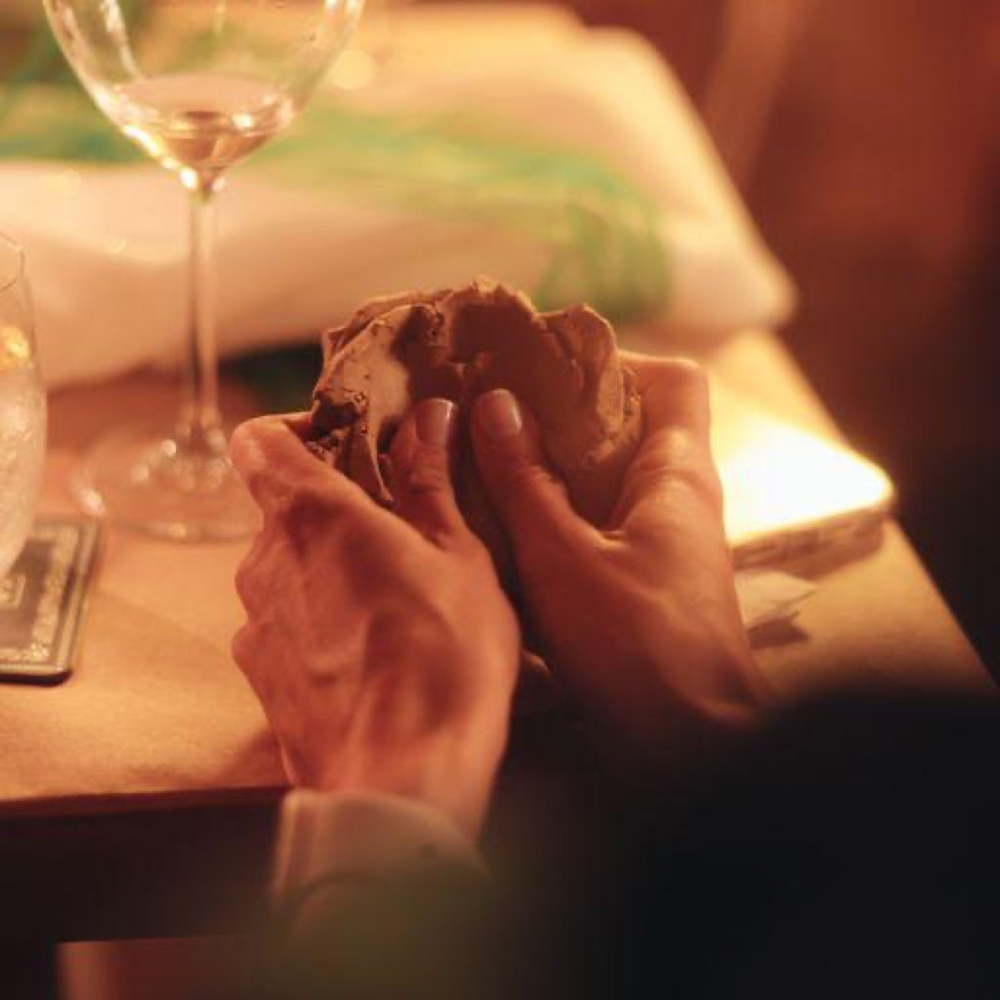
Residência Artística
A Residência Artística oferecida pela artista Eliza Makray consiste em pelo menos dois encontros presenciais, elaborados para jovens e adultos que queiram um impulso para iniciar um novo projeto artístico. Através de uma vivência dinâmica e participativa, a artista Eliza Makray compartilha seu conhecimento e experiência a respeito da multidisciplinariedade no âmbito artístico.
Um convite para refletirmos sobre a sociedade de consumo em que vivemos e elaborarmos possibilidades de desenvolver nosso processo criativo de maneira consciente que se contraponha à falsa percepção de dependência do mercado e produtos industrializados para a expressão artística.
Diante dessa perspectiva, a artista convida cada pessoa a mapear suas demandas pessoais e a criar suas próprias ferramentas artísticas, através de um processo manual e artesanal e que utilize recursos naturais do território em questão, utilizando referências tradicionais e dialogando com a perspectiva ecológica de perceber e interagir com o ecossistema de uma maneira responsável e consciente.
Receber apresentação da residência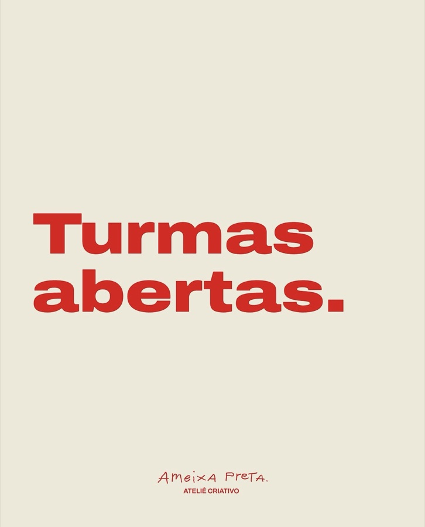
Ateliê Ameixa Preta
Eliza também leciona no Ateliê Ameixa Preta, na Lagoa da Conceição, Florianópolis — turmas abertas de desenho, bordado e acompanhamento individual para artistas.
@atelieameixapreta